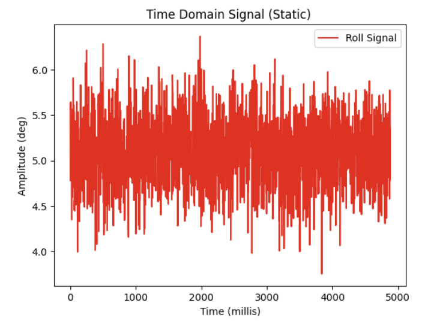
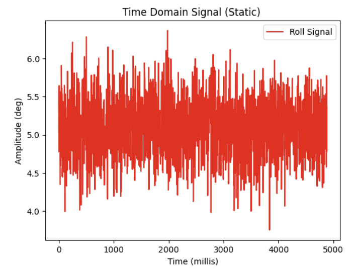
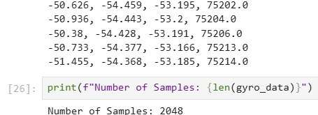
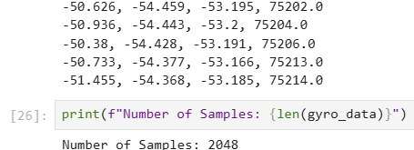

Lab 2: IMU
Setup
I first installed the 'SparkFun 9DOF IMU Breakout_ICM 20948_Arduino Library' and connected the Nano to the IMU via QWIIC connection.

Artemis QWIIC connection to IMU
Note the AD0_VAL definition. What does it represent, and should it be 0 or 1?
The AD0_VAL definition represents the value of the last bit of the IMU's I2C address. Flipping this Address 0 bit is used to change the I2C address. By default, this bit is set to 1 as the ADR jumper on my IMU is not soldered closed, but if I did solder the jumper closed, I would then need to flip the bit to 0.
I then added a visual blink indicator to the example code and uploaded it to the Nano:
Nano blinking 3 times on startup
Check out the change in sensor values as you rotate, flip, and accelerate the board. Explain what you see in both acceleration and gyroscope data.
The acccelerometer measures linear acceleration in the x, y, and z directions. When the accelerometer is lying flat and face up in the air, the acceleration in the z-direction being recorded is approximately 9.8 m/s^2 -- corresponding to acceleration due to gravity. As I rotate the accelerometer to align with each axis, you can see as the graviational force begins to have a greater and greater component in that direction until peaking at the gravitational acceleration constant.
The gyroscope measures angular velocity, or the change in angle of the IMU over time. As I rotate the IMU around each axis, you can see the gyroscope values fluctuate (as the angle is changing with time) and settle at 0 when the angle of the IMU remains constant.
Accelerometer
Using the equations for deriving pitch and roll from linear accelerations in the x,y, and z directions covered in Lecture 4:
We can calculate roll as: \[\theta = atan2(a_x, a_z)\] And pitch as: \[\phi = atan2(a_y, a_z)\]
I added the following lines to output roll and pitch data:
I then tested the formulas at -90, 0, 90 degree rotations for both pitch and roll to see if the output made sense:

Pitch and Roll at 0 deg.

Pitch at 90 deg. and Roll at 0 deg.

Pitch at -90 deg. and Roll at 0 deg.

Pitch at 0 deg. and Roll at 90 deg.

Pitch at 0 deg and Roll at -90 deg.
- 1. To record data, I created a 2 dimensional array in Arduino to store lists of Pitch, Roll, and Timestamp Data.
- 2. Dynamically allocating memory onto the heap, I was able to store 2048 data points, or approximately 5 seconds worth of timestamp data for both pitch and roll.
- 3. Using my function 'Send_RP_Data_Store', I sent my bulk data from my Nano to my laptop via the BLE setup from Lab 1.
- 1. Before creating my PSD, I first installed the matplotlib and scipy packages.
- 2. I then used my 'SEND_RP_DATA_STORE' to retreive 5 seconds of samples from my Nano for both Pitch and Roll and plotted the time domain signal for both pitch and roll:
 

- 3. I then introduced some noise in my data by shaking the IMU.

- 4. I then performed the FFT to get the following PSD for each measure:

Discuss how the choice of cut-off frequency affects the output.
- From the results of the FFT, I selected 5 Hz as my cutoff frequency as frequencies above that value appeared to be correlated with high-frequency noise as evidenced in my plots above.
- My choice of 5 Hz as the cut-off frequency strikes a balance between attenuating unwanted high-frequency noise (such as vibrations or random fluctuations) while preserving the important low-frequency signal (like the gradual changes in pitch and roll)
that I am trying to track. This ensures that the signal remains clear and accurately represents the desired data without unnecessary distortions from high-frequency noise.
From Lecture 4, we are given the following recursive formula for a low pass filter:
\(\theta_{\text{LPF}}[n] = \alpha \cdot \theta_{\text{RAW}} + (1 - \alpha) \cdot \theta_{\text{LPF}}[n-1]\)
\(\theta_{\text{LPF}}[n-1] = \theta_{\text{LPF}}[n]\)
However, we need to calculate a value for alpha using our selected cutoff frequency of 5Hz.
We can use the following equation for a RC low pass filter:
\( f_c = \frac{1}{2\pi RC}\)
Where \( f_c \) is our cutoff frequency, to then solve for RC in the following equation:
\(\alpha = \frac{T}{T + RC} \)
To which we can finally solve for \(\alpha\).
Substituting a cutoff frequency of 5 Hz in for \( f_c \), we obtain a value of 0.318 seconds for the RC time constant.
When sending data over to my laptop, I calculated my sampling frequency to be about 400 samples/s or a sampling period of approx. 0.0025 seconds.
Substituting these two values into our last equation, we obtain an \(\alpha\) of approximately 0.078.
Below is a code snippet from my LPF implementation:
And these are the results of the LPF on both Pitch and Roll data from the accelerometer overlaid over the raw data:

As shown above, a lot of the high frequency noise was able to be attenuated.
Gyroscope
Using the following equations to calculate Pitch, Roll and Yaw from angular velocity of the gyroscope:
\(\theta_g = \theta_g + \text{gyro reading} \cdot dt\)
\(\phi_g = \phi_g + \text{gyro reading} \cdot dt\)
\(\psi_g = \psi_g + \text{gyro reading} \cdot dt\)
I added code to my Nano sketch to compute and store the output of these formulas (a relevant code snippet is shown below):
I chose to plot the output of the gyroscope as I rotated it between 0, 90, and -90 deg. angles and overlay it with both the raw and filtered pitch and roll values from the accelerometer. (Since gravity does not have a component along the yaw axis, I could not directly compare the gyroscope's yaw data with the accelerometer's measurements, as the accelerometer only detects linear acceleration and cannot measure rotational motion around the yaw axis.)


Although the time period of data collection was brief, as can be seen in the plot above, I noticed that compared to the accelerometer, the gyroscope tends to slightly drift over time after rotations, even when reverting back to its original angle. This drifting appears to be okay during the short window shown above, but over long time periods this drift accumulates. Additionally, compared to the raw accelerometer data, the raw gyroscope data had far less noise, seemingly less than even my filtered accelerometer data.
Lastly to test my yaw formula, I attempted to oscillate the IMU in the yaw axis between -90 deg , back to 0 deg , and 90 deg within the 5 second sampling window:

Using the following equation from Lecture 4:
\(\theta = (\theta + \theta_g) (1 - \alpha) + \theta_a \alpha \)
I applied a complementary filter to my IMU data to compute pitch and roll more accurately with higher stability with the following code:
I selected the value for comp_alpha to be 0.3 as I trusted the accelerometer's data more than the gyroscope, but still wanted to strike a balance between the high sensitivity and noise of the accelerometer and the drifting of the gyroscope.
Demonstrate its working range and accuracy, and that it is not susceptible to drift or quick vibrations.
To demonstrate the effectiveness of the complementary filter, I placed the IMU on a table at rest, and shook it at two intervals during the sampling period. I then plotted a graph for each measurement.
As shown below, the complementary filter tries to strike a balance between the sensitive accelerometer and the drifiting gyroscope. I did notice that the complementary filter output does still drift slightly due to the contributions from the gyroscope, but at the same time it has reduced a lot of the high frequency noise from the shaking table, while still remaining responsive to subtle changes in pitch and roll that would have been missed by just the gyroscope alone.


Sample Data
How quickly are you able to sample new values?
Removing any extraneous print statements and delays, I was able to sample 2048 samples in approximately 4996 milliseconds. The equivalent sample rate was approximately 400 samples per second.
Does your main loop on the Artemis run faster than the IMU produces new values?
My main loop on the Artemis does run faster than the IMU produces new values. In my implementation, the IMU cannot retrieve a sample unless the call to myICM.dataReady() returns true, whereas the main loop can continue to execute regardless of the return value of the function.
Consider if it makes sense to have one big array, or separate arrays for storing accelerometer and gyroscope data, argue for your choice.
In my implementation, I chose to use multiple, separate arrays in order to store my gyroscope and accelerometer data. I felt that this made the most logical sense to me, and allowed me to easily differentiate between the different data sources when transmitting my data over BLE.
Consider the best data type to store your data. Should you use string, floats, double, integers? Justify your decision.
The primary data type I chose to store all of my data as was float. This is because the accelerometer and gyroscope sensor data required precision with decimal values and floats provide the necessary precision while being memory efficient (compared to double). However, if I were to optimize further, I might consider switching from float to uint32_t for storing time values (such as those obtained from millis()), as millis() returns an integer value. Using uint32_t would likely be more appropriate for storing time because it's a positive integer value and avoids the unnecessary overhead of floating-point representation. That said, I decided to stick with floats throughout for consistency across all data types. Additionally, since the memory space for storing uint32_t and float is identical, I didn't consider the trade-off significant enough to change the data type.
Consider the memory of the Artemis; how much memory can you allocate to your arrays? What does that correspond to in seconds?
Assuming that the Artemis has the full 384 kB of RAM available to allocate to the arrays, and assuming that each sample stores 4 float data points (Roll, Pitch, Yaw, and Timestamp), this would result in:
\[ \text{Data per sample} = 4 \times 4 \, \text{bytes} = 16 \, \text{bytes} \]
With a total available RAM of 384 kB, we can calculate the maximum number of samples that can be stored:
\[ \text{Max samples} = \frac{384 \, \text{KB}}{16 \, \text{bytes/sample}} = \frac{384,000 \, \text{bytes}}{16 \, \text{bytes/sample}} = 24,000 \, \text{samples} \]
So, at most 24,000 samples can be stored in total.
Assuming 400 samples can be collected per second, the time it would take to use up the available memory is:
\[ \text{Time before running out of memory} = \frac{24,000 \, \text{samples}}{400 \, \text{samples/sec}} = 60 \, \text{seconds} \]
So, under these assumptions, you would be able to sample for approximately 1 minute before the available memory is exhausted.
5 seconds of time stamped data from IMU:
 

Shown above are the first and last 5 IMU sensor readings I collected from a total of 2048 readings from the Nano. From first timestamp to last timestamp, the collected data spans 5199 milliseconds (5.2 seconds)
5 seconds worth of sample data collected from IMU.
For my >5 seconds of IMU sample data, I decided to chart the raw accelerometer, raw gyroscope, and complimentary filter pitch readings over the span of those 5.2 seconds.
Record A Stunt
Show what you have tried, and discuss what you observe.
In the stunt video I attempted a vertical flip and some targeted driving.
I observed that the car accelerates extremely quickly and is able to spin about its central axis very easily.